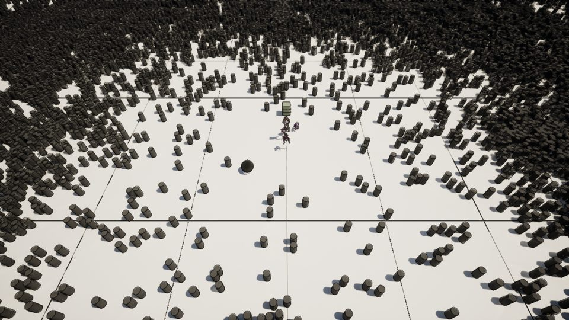
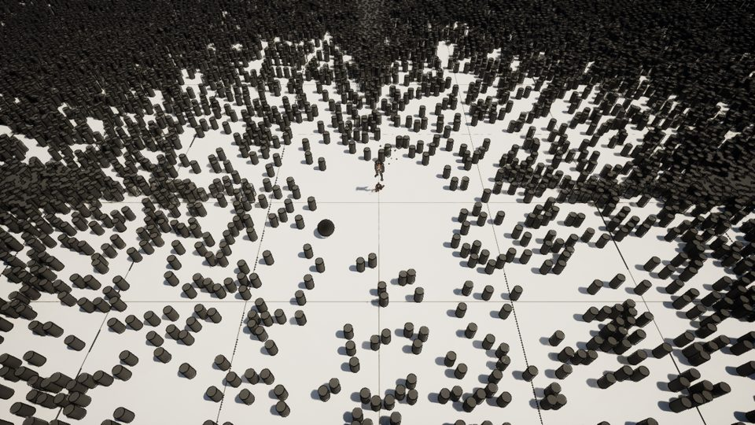
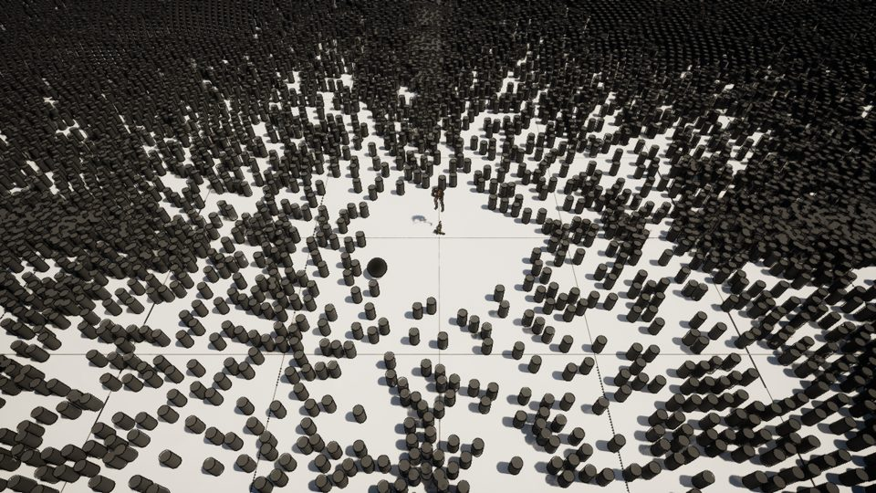

Twenty thousand bodies, one fight, every number measured
What the lab builds: deterministic simulation cores, a crowd that rings a real fight, props that break under the fighters' own blades, and the instruments that prove every claim. All footage is captured offscreen from Unreal or rendered from the cores themselves. Every number comes from a run and carries its receipt.
Flagship · Fight in the Ring
20,000swarm agents ringing the arena
15of 15 props broken by the fighters' own strikes, before any scripted finisher
1.60msswarm step p99 during the fighttarget 2 ms · met
3arena fights won, 38 hits in the captured one
11.5msframe p50 with ring, fight, breaks and feedback
21.9msframe p99, same scenetarget 16.7 ms · not met



receipt fight-in-the-ring/ddb7da7086be · run 2026-11-10T23:12:27 · combat feedback p99 0.469 ms · hitbox core worst swing mean 1.51 ms · slime ends in 2 blobs
Swarm core
A crowd that fits the frame budget
20k surround rings
Separation, flow-field seek, arrival and angular surround slots, all in an engine-free C++ core that Unreal drives through an adapter. A dropped frame or a thread race would change the replay hash, so the core is checked against its pinned hash on every build.
- 42,023 agentsagents inside the 2 ms budget on 8 threads (14,952 agents on one)
- 0.881 msstep for 20,000 agents on 8 threads
- 2.15 msstep p99 of the 20k ring inside Unreal target 2 ms · not met
- 915→460 µs5,000-agent step on 8 threads after pool workers inherit the caller's priority; Windows had parked them on E-cores #965

Spatial index
From 3.6 ms to under budget, bit-for-bit identical
before / after
The spatial index answers every radius, cone and capsule query in the lab. Four passes took the 5,000-entity query from 3,626 µs to 455 µs, and each kept every checksum equal to the one before. The clip is the first pass, old and new side by side.
- 2.71xthe Astra pass (#731): rank bitmap, packed SoA, SSE2 kernels, 3,626 µs to 1,336 µs
- 150/150visualised frames identical to the old code
- ~9%register-only hit recording #966
- 455 µs64-query blocks on 6 P-cores, merged in block order, under the 500 µs budget #990
- ~330 µsof the step is serial, so the next win is single-thread, not more cores #990
Hitbox · destruction · softbody
A blade sweeps the hitbox core and the world breaks
M2 break
The blade's swing runs through the engine-free hitbox core. Contacts queue hits in the destruction core, and the slime is an XPBD softbody that splits on cue. The 20k ring keeps stepping the whole time.
- 5props broken by one sweep, in the order the blade reaches them
- 0.183 mshitbox core per step, mean
- 1.58 ms20k swarm step p99 through the break target 2 ms · met
- +0.11 msGPU cost of 50 props breaking at once, all in frame; worst frame 7.6 ms #979
Cores, rendered from their own state
Every frame hash-checked against the core
These clips come from the lab's viz tool. It replays a core's trace and draws it, and it refuses a frame whose state hash doesn't match the core's.
Determinism · simulation
Two machines, one answer

ChatGPT Pro ran a city economy on a Linux AMD EPYC sandbox. We re-ran it on this Windows Intel desktop, and the event logs came out byte-identical. That's what lets an outside lab's results be trusted here without re-deriving them.
- 7/7year-long runs byte-identical across OS, CPU vendor and Python version
- 61.1%a drought: fulfilment dips to 61.1% and recovers to 91.2% by day 365
- 67.5%a faction war: fulfilment never recovers (66.4% to 67.5%); the worst district: Gardens 40%

Local 3D generation
59 props through the quality gate, made on one GPU

The machine as an instrument
Finding the real bottleneck with numbers

- 65.4%GPU busy across 155 turns. Of 8.30 h idle, 4.11 h were blocked on RAM, not on work.
- 32 GBthe box's real RAM (not 64); every lease rule is tuned for it Fable 5.2 review
- 60×how much longer short CPU jobs waited than they ran: a median of 37 minutes for 29 seconds #994
- #970 #987a CPU job no longer takes the memory a waiting GPU job needs installed
Lab instruments
Tools that make results visible
viz
Turns a core's state into strips, animations and before/after pages, with each frame hash-verified.
timeline
Shows a day of leases, jobs and failures on one axis, which is how the RAM blocking showed up.
showcase
Renders TOML specs into cards like these and refreshes them when a watched path changes.
Sieve
Static analysis, sampling profiles and roofline checks feed a ranked findings ledger.
site
This page, the demos and a dated archive: manifests in git, media in release zips.
Cockpit
Opens everything above from Lab Cockpit.cmd on the desktop.